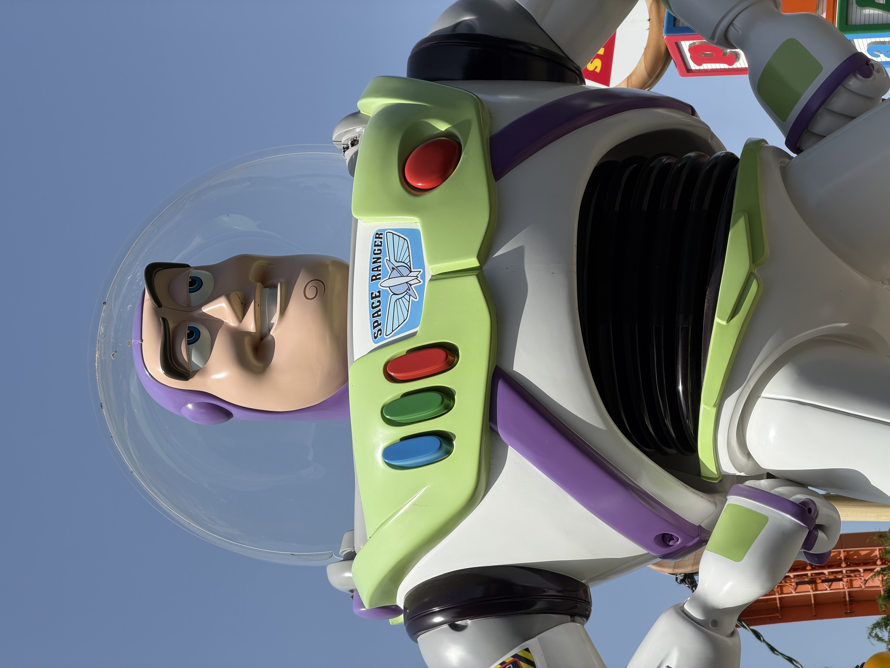
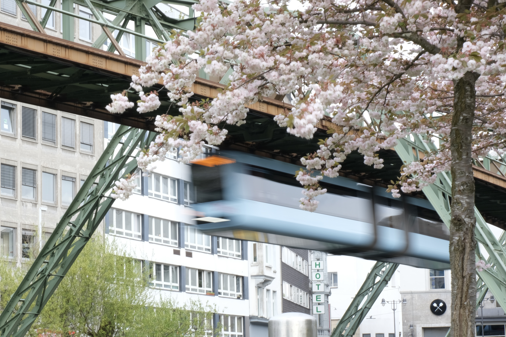

Überblick
Über mich
Hey, ich bin Tomas und bin Informatikstudent im Bachelor an der Heinrich-Heine-Universität mit einer großen Begeisterung für Technik. Mein Interesse gilt sowohl Software als auch Hardware, mit denen ich mich auch in meiner Freizeit gerne beschäftige.
Außerdem interessiere ich mich für Didaktik und die verständliche Vermittlung technischer Inhalte. Ich freue mich darauf, mein Wissen kontinuierlich zu erweitern und an spannenden Projekten mitzuwirken.

Bildungsweg
-
2024-heute
Informatik B.Sc.
Heinrich-Heine-Universität, Düsseldorf
Aktiv -
2023-2024
Lehramt Informatik und Technik B.Sc.
Universität Duisburg-Essen, Essen
Gewechselt -
2018-2022
Allgemeine Hochschulreife mit Schwerpunkt Informationstechnik
Heinrich-Hertz-Berufskolleg, Düsseldorf
Abgeschlossen -
2012-2018
Realschulabschluss mit Qualifikation
Städt. Dieter-Forte-Gesamtschule, Düsseldorf
Abgeschlossen
Berufserfahrung
-
2025-heute
Kundenbetreuer
Bearbeitung von Kundenanfragen per Telefon und E-Mail
Düsseldorf
Aktiv -
...
Weitere Informationen im Lebenslauf!
Skills
- 💻 Java
- 🌐 HTML & CSS
- 🍃 Spring Boot
- ⚙️ C (Programmiersprache)
- 🐍 Python
- 🗄️ MySQL
Hobbys
Ich habe zurzeit sehr viel Spaß an Fotografie und benutze je nach Situation meine Fujifilm X-T4 oder mein Iphone 17 Pro.

Aufgenommen mit: Fujifilm X-T4

Aufgenommen mit: iPhone 17 Pro
Aufgenommen mit: iPhone 17 Pro

Aufgenommen mit: Fujifilm X-T4
Kontakt
Wenn du Fragen hast oder mit mir in Kontakt treten möchtest,
erreichst du mich aktuell nur über die unten stehenden Links!
Persönliche Kontaktinformationen findest du in meinem Lebenslauf.
| Siehe Lebenslauf | |
| Telefon | Siehe Lebenslauf |
| GitHub | github.com/treybit |